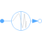
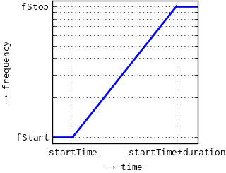
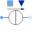

FrequencySweepCurrentSourceCurrent source with integrated frequency sweep |

|
Diagram
{kind=link}
Information
This information is part of the Modelica Standard Library maintained by the Modelica Association.
This source provides polyphase constant RMS phase currents I and phase angles phi,
whereas the frequency sweeps from
fStart to fStop with duration. The frequency sweeps such
way that on a logarithmic frequency scale, the frequency curve appears linear.

Parameters (7)
| m |
Value: 3 Type: Integer Description: Number of phases |
|---|---|
| fStart |
Value: Type: Frequency (Hz) Description: Start sweep frequency |
| fStop |
Value: Type: Frequency (Hz) Description: Stop sweep frequency |
| startTime |
Value: 0 Type: Time (s) Description: Start time of frequency sweep |
| duration |
Value: Type: Time (s) Description: Duration of frequency sweep |
| I |
Value: Type: Current[m] (A) Description: RMS current of the source |
| phi |
Value: -Modelica.Electrical.MultiPhase.Functions.symmetricOrientation(m) Type: Angle[m] (rad) Description: Phase shift of the source |
Connectors (2)
| plug_p |
Type: PositivePlug Description: Positive quasi-static polyphase plug |
|
|---|---|---|
| plug_n |
Type: NegativePlug Description: Negative quasi-static polyphase plug |
Components (7)
| v |
Type: ComplexVoltage[m] Description: Complex voltage |
|
|---|---|---|
| i |
Type: ComplexCurrent[m] Description: Complex current |
|
| plugToPins_p |
Type: PlugToPins_p |
|
| plugToPins_n |
Type: PlugToPins_n |
|
|  | currentSource |
Type: VariableCurrentSource |
| logFrequencySweep |
Type: LogFrequencySweep |
|
| const |
Type: ComplexConstant[m] |